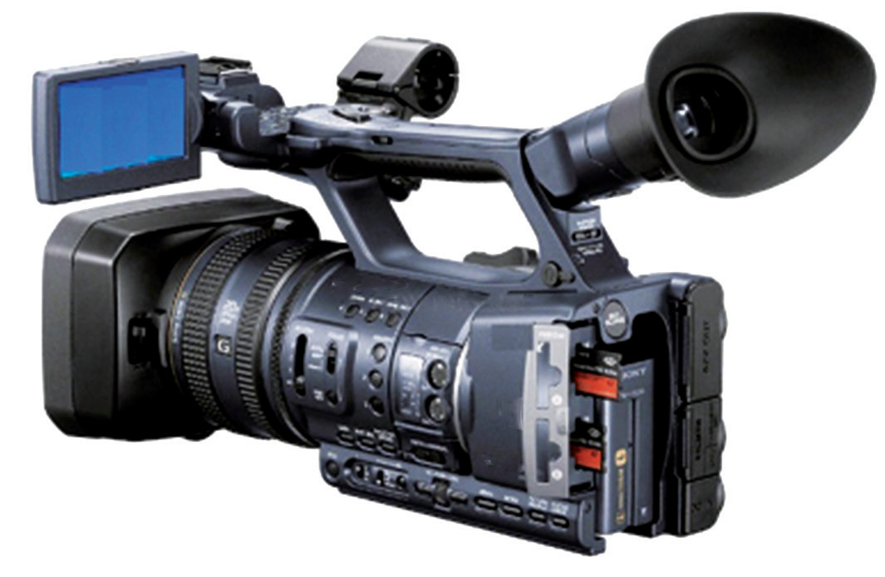
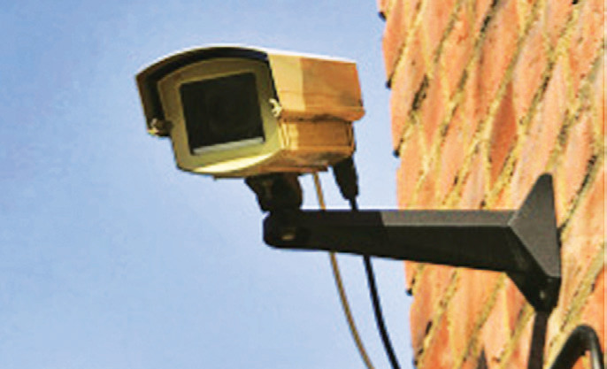
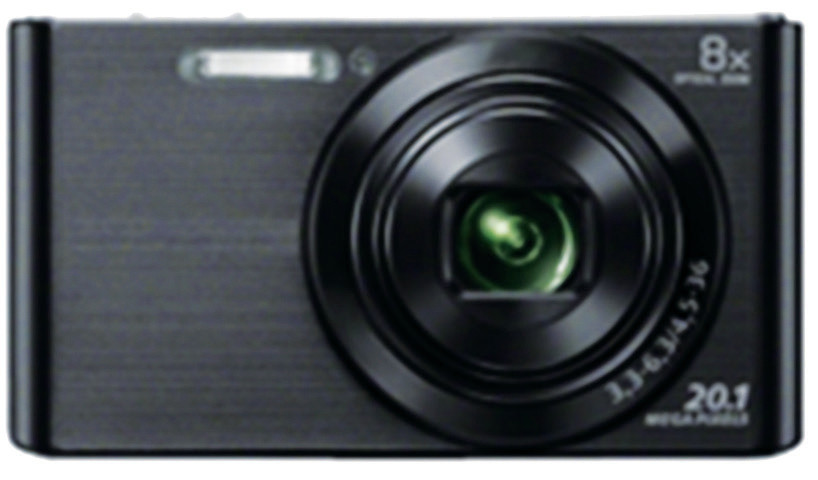
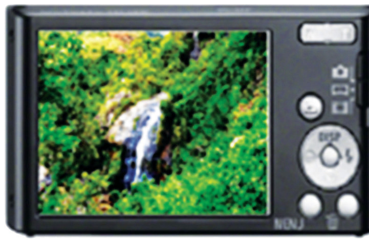

Task 6.5
Using locally available materials, design and construct and test a simple lens camera.
Uses of cameras
The main function of a camera is to take photographs.
However, specialised cameras have other additional functions as follows:
(a) Video cameras are used to take motion pictures.
Figure 6.14 shows a video camera.

Figure 6.14: A video camera
(b) Closed-circuit television (CCTV) cameras are used for surveillance in high-security installations, banks, shopping malls, offices and residences.
Figure 6.15 shows an example of a CCTV security camera.

Figure 6.15: Closed-circuit television (CCTV) camera
(c) Digital cameras are used to capture images that can be fed into computers.
An example of a digital camera is shown in Figure 6.16.


Figure 6.16: A digital camera
Exercise 6.4
A photographer used a camera fitted with a lens having a focal length of 50 mm to take a photograph of a flower that is 5 cm in diameter.
Suppose the flower is placed 20 cm in front of the camera lens.
(a) At what distance from the film should the lens be adjusted to obtain a sharp image?
(b) What would the diameter of the image of the flower on the film be?
(c) What is the nature of the lens of this camera?
You are standing at a point 1.2 m in front of a plane mirror while